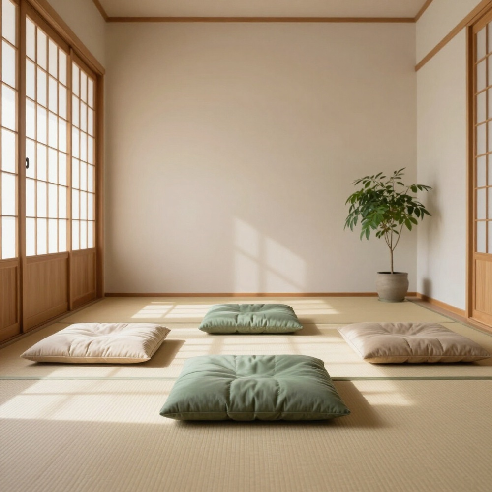

Still and Savour
A quiet space for stillness, inquiry and reflection, where mindful practice meets the joy of nourishment: food and handmade self-care, made and shared with care.

Practice Guide
Deepen your meditation through the path of stillness and insight designed for clarity and ease.
Understand the PracticeBook Sessions
Reserve your spot at our group sittings and build a steady practice, together.
Reserve a CushionSavour Kitchen
Food and handmade self-care, made the same unhurried way: simple ingredients, a mindful hand and plenty of care. Make, share and savour together.
Enter the Kitchen